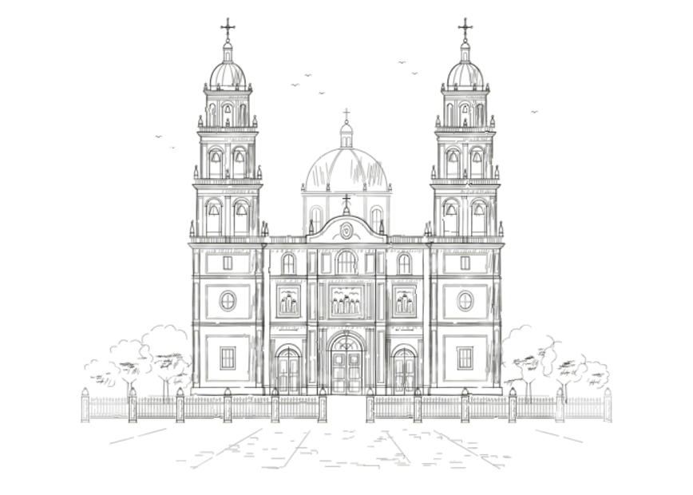
Ceremonia
Catedral de Morelia
hrs
Av. Francisco I. Madero Pte. S/N, Centro Histórico de MoreliaUbicación de la Catedral de Morelia (se abre en Google Maps)
Abriendo tu invitación…
Morelia, Michoacán
Con mucho cariño e ilusión nos complace invitarlos a ser parte de la celebración de nuestro enlace matrimonial. Queremos compartir con ustedes la alegría de este día tan especial en compañía de nuestros padres:
Padres del novio
Leticia López Ávalos
Salvador Alvarado Villafuerte
Padres de la novia
Verónica García Guerrero
Félix Calderón Solorio
· Morelia, Michoacán
Nuestra historia
Nuestra historia comenzó en caída libre, con el corazón a mil por hora y el suelo a kilómetros de distancia. Cuando nos conocimos, entendimos que nos unía algo más fuerte que el tiempo, la distancia y el destino: coincidimos en un viaje sin imaginar que lo mejor de esa experiencia sería lo que vendría después. Desde entonces hemos seguido atreviéndonos juntos, y hoy queremos dar el siguiente gran salto rodeados de las personas que más queremos.
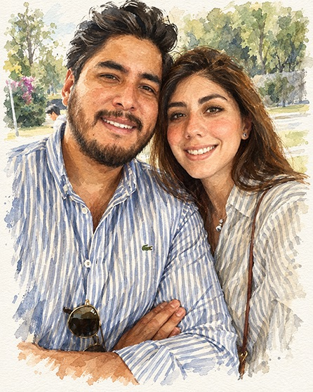
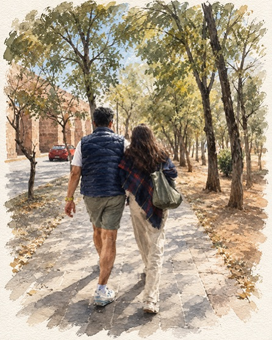
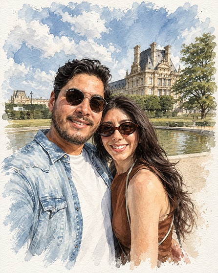
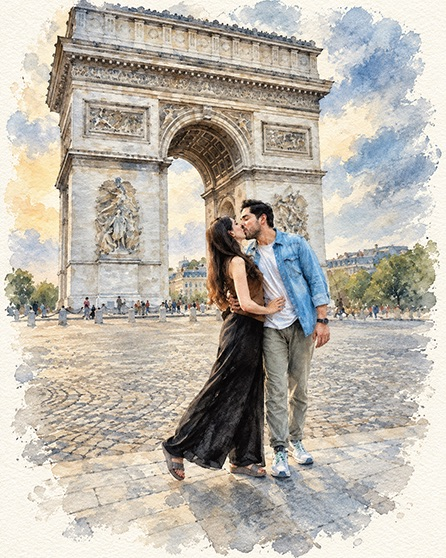
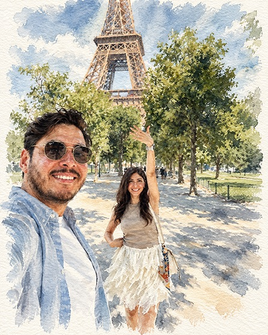
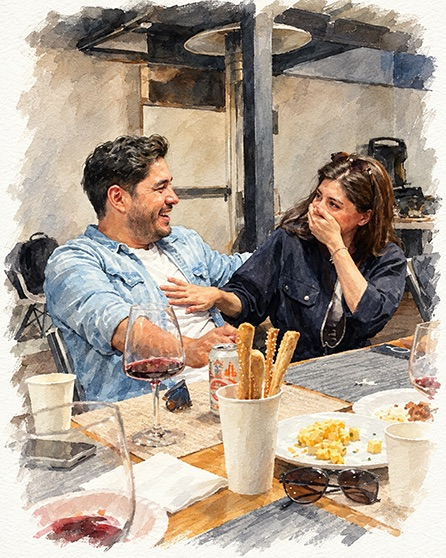
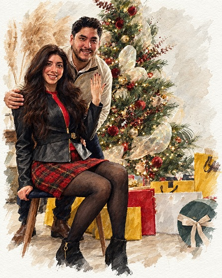
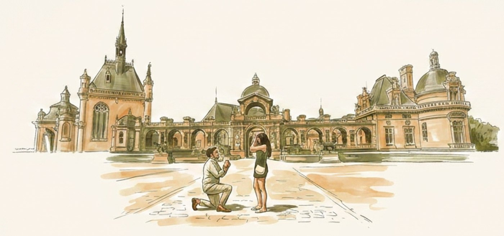
La magia de la conexión, la suerte de coincidir, el esfuerzo de permanecer y la bendición de ser un nosotros.

Catedral de Morelia
hrs
Av. Francisco I. Madero Pte. S/N, Centro Histórico de MoreliaUbicación de la Catedral de Morelia (se abre en Google Maps)
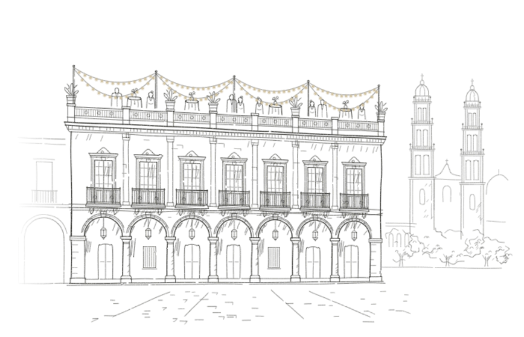
Hotel Casa Grande
hrs
Portal Matamoros 98, Centro, 58000 Morelia, Mich.Al caer la tarde
Y cuando el sol se ponga sobre Morelia, comenzará la fiesta
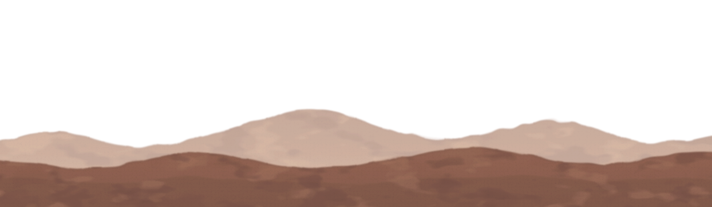
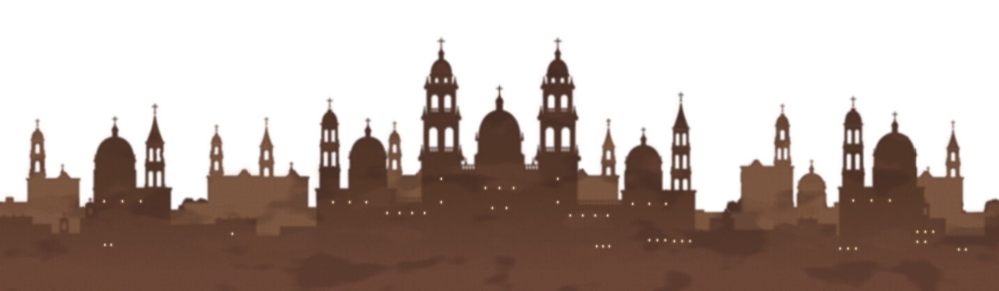
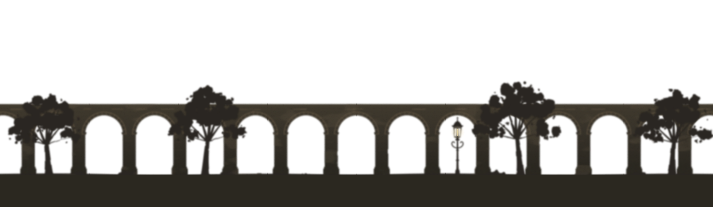
Itinerario
Del primer «sí» en la Catedral a la última canción: cada hora del 6 de marzo la queremos vivir a su lado.
Todo empieza en la Catedral de Morelia.
El Hotel Casa Grande nos recibe con una copa en alto y la tarde dorada sobre los portales.
A la mesa y sin prisa: buena cocina, mejor compañía y el primer brindis de la noche.
La Catedral se ilumina y el cielo de Morelia celebra con nosotros.
Para quienes sigan de pie a medianoche: un antojo para recuperar fuerzas y seguir la fiesta.
La última canción, un abrazo largo y a soñar con lo vivido.
Formal
Se sugiere evitar el verde olivo y los colores claros.
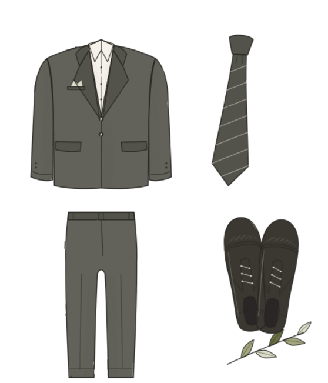
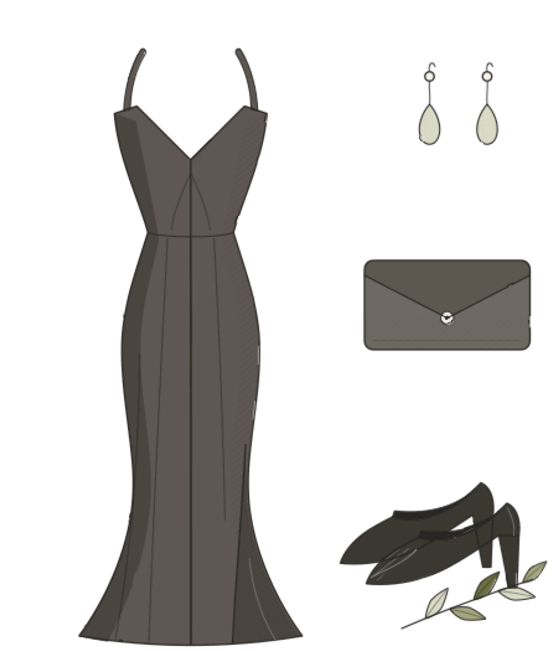
Llega sin preocupaciones
Ese día contaremos con servicio de valet parking en la recepción del hotel.
Costo y horario Por confirmar
Una noche para los grandes
Queremos que disfruten la noche sin preocupaciones: la celebración será solo para adultos.
Mesa de regalos
Si además quisieras tener un detalle con nosotros, armamos una mesa de regalos con algunas ideas para nuestro hogar.
Número de evento
406823
CLABE
012180028772723592
Tu presencia es nuestro mejor regalo.
Confirma tu asistencia
Te agradecemos confirmar antes del .
Para confirmar tu asistencia, escríbenos por WhatsApp.
Para su estancia en Morelia
Nuestros rincones favoritos
Les recomendamos considerar los hoteles sugeridos a continuación, ubicados a pocos minutos de nuestra recepción.
Aquí es la recepción
Centro Histórico
Hotel boutique: un oasis privado donde la elegancia colonial se fusiona con el confort moderno.
Centro Histórico
El hotel con más de 400 años de historia en Morelia. Ex Palacio de Iturbide.
Centro Histórico
Estilo único en el corazón de Morelia: hotel boutique con estilo michoacano.
Centro Histórico
Magistralmente restaurada, Casa Alondra transporta a los huéspedes a una época pasada con todas las comodidades modernas y uno de los restaurantes más destacados de Morelia.
Av. Acueducto
Hermosa construcción antigua, la que fuera anteriormente residencia del cantautor michoacano Marco Antonio Solís.
Centro Histórico
Teléfono y descripción por confirmar.
Centro Histórico
Disfruta de un merecido alojamiento en Morelia.
Con quién arreglarse el día de la boda.
Para disfrutar Morelia
Para pasear y saborear
Nuestros restaurantes favoritos de Morelia.
Mezcalería + cocina de autor
Más allá de sus mezcales y cocina de autor, crearon un espacio diseñado para el crecimiento del espíritu.
Gastronomía mexicana
Un lugar histórico con la mejor gastronomía mexicana, sabores bien definidos. Toque cantinero que muchos añoran.
Cocina michoacana contemporánea
Un restaurante emblemático de Morelia, reconocido por su ambiente lleno de arte popular mexicano, decoración tradicional y cocina michoacana contemporánea.
Centro Histórico
Ubicado dentro del histórico Hotel de la Soledad, este restaurante destaca por su atmósfera elegante y tranquila en pleno centro histórico. Su propuesta gastronómica mezcla cocina mexicana contemporánea con influencias internacionales, acompañada de un entorno sofisticado con patios coloniales y jardines interiores.
Dentro del Centro Histórico de Morelia.
Una escapada que vale la pena.
Pueblo mágico a 1 hr de Morelia
Uno de los pueblos mágicos más representativos de México, famoso por su arquitectura colonial, tradiciones purépechas y ambiente cultural. Sus calles empedradas, plazas tranquilas y mercados artesanales crean una experiencia auténtica y muy fotográfica. Es especialmente reconocido por la celebración de Día de Muertos, aunque durante todo el año ofrece gastronomía típica, arte popular y acceso al lago de Pátzcuaro y sus islas.
Contacto
Nuestra wedding planner te ayudará con gusto en cualquier detalle.
Wedding planner
Fany Valencia
Los esperamos con todo nuestro cariño
Verónica & Abraham
06 · 03 · 2027Morelia, Michoacán